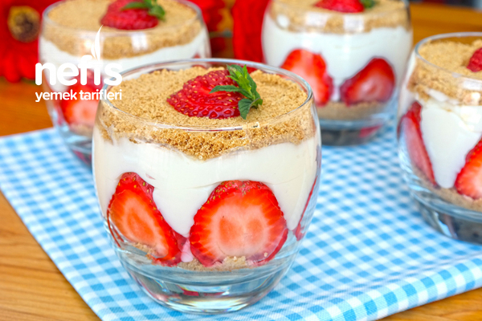

Anasayfa
Magnolia Tatlısı Mazlemeler
Magnolia Tatlısı Nasıl Yapılır?
Magnolia Tatlısı Fotoğraflı anlatım
Malzemeler
5 su bardağı süt (1 litre)
4 yemek kaşığı un
100 ml krema (yarım kutu)
3/4 (bir yarım+bir çeyrek) su bardağı şeker
1 paket vanilya
1 adet yumurta
1 paket bebe bisküvisi (yulaflı diğer bisküviler de tercih edilebilir)
1 su bardağı fındık
Çilek

Anasayfa
Magnolia Tatlısı Mazlemeler
Magnolia Tatlısı Nasıl Yapılır?
Magnolia Tatlısı Fotoğraflı anlatım